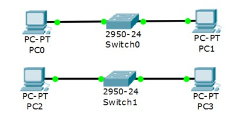
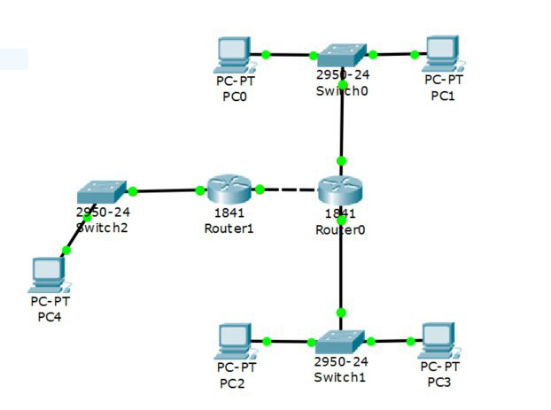

Захарова Софья
ИДМ-18-04
Лабораторная работа #3
Настройка локальной сети передачи данных
-
Настройка коммутаторов и маршрутизаторов.
Расчет диапазонов подсетей.
| - | Lan A | Lan B | Lan C |
|---|---|---|---|
| Кол-во узлов | 35 | 120 | 512 |
| Subnet | 192.168.5.0 | 172.16.5.0 | 10.10.5.0 |
| Mask | 255.255.255.192 | 255.255.255.128 | 255.255.252.0 |
| Broadcast | 192.168.5.63 | 172.16.5.127 | 10.10.8.255 |
ШАГ 1: Разместить на рабочем поле коммутатор и два компьютера и соединить их

ШАГ 2: Добавить на рабочее поле еще один коммутатор с двумя компьютерами и настроить адресацию из другой подсети

ШАГ 3: Соединить коммутаторы между собой и проверить работоспособность сети (Не работает, так как коммутаторы подсоединяются только к маршрутизаторам)

ШАГ 4: Добавить маршрутизатор на рабочее поле
ШАГ 5: Добавить на рабочее поле еще один маршрутизатор. Подключить к нему коммутатор и компьютер

| Устройство | IP - адрес | Маска | Шлюз |
|---|---|---|---|
| PC0 | 192.168.5.62 | 255.255.255.192 | 192.168.5.1 |
| PC1 | 192.168.5.61 | 255.255.255.192 | 192.168.5.1 |
| PC2 | 172.16.5.126 | 255.255.255.128 | 172.16.5.1 |
| PC3 | 172.16.5.125 | 255.255.255.128 | 172.16.5.1 |
| PC4 | 10.10.8.254 | 255.255.252.0 | 10.10.5.1 |
| R0 0/0 | 192.168.5.1 | 255.255.255.192 | - |
| R0 0/1 | 172.16.5.1 | 255.255.255.128 | - |
| R0 0/2 | 15.15.5.2 | 255.255.255.252 | - |
| R1 0/1 | 10.10.5.1 | 255.255.252.0 | - |
| R1 0/2 | 15.15.5.1 | 255.255.255.252 | - |
Проверка работоспособности сети:

Пакеты успешно отправляются!